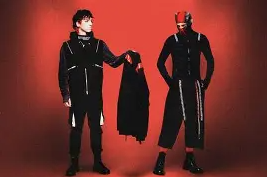
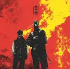
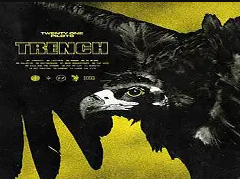
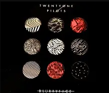

Twenty-one Pilots has a total of seven Albums, a new one coming called Breach
Twenty-One Pilots first started in 2009. Twenty-One Pilots is a mix of Alternative Rock, Indie Pop, and Rap.
I like Twenty-One pilots because since I was little I started listening to them but also it's what kind of what helped me connect with my family since we listened to them, I mainly like them though because most songs I could kind of relate to and I like the vibe the songs give out. What I like about Twenty-One pilots is that in the songs is also a story that people have been putting together and how most of the songs speak out about stuff. The songs I like are Ride, HeavyDirtySoul, Stressed Out, and Car Radio. I think most people would like them for the story that's hidden in the songs, the vibe they give off or maybe because they don't cuss in any songs or just other reasons.
| Started releasing albums in 2009 | |||
| Album Name | Released In | Album Picture | Most played song |
| Breach | September 12, 2025 |  | To be Released |
| Clancy | May 24, 2024 |  | Overcompensate |
| Scaled & Icy | May 21, 2021 | |
Choker |
| Trench | October 5, 2018 |  | Chlorine |
| BlurryFace | May 17, 2015 |  | Stressed Out |
| Vessal | January 8, 2013 | Car Radio | |
| Regional At Best | July 8, 2011 | |
Car Radio |
| Twenty One Pilots | December 29, 2009 | |
Guns for Hands |